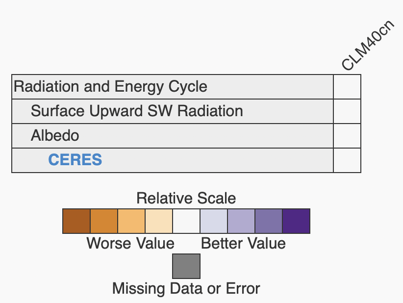
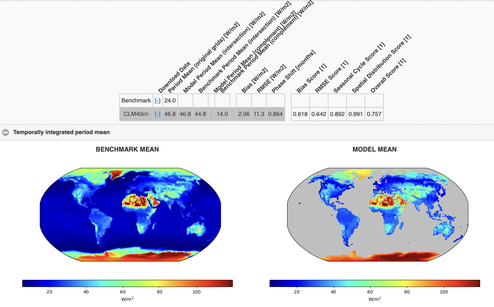

ilamb on Gadi at NCI
ACCESS-NRI is maintaining a version of the python package ilamb for International Land Model Benchmarking (ILAMB) and International Ocean Model Benchmark (IOMB) on Gadi at the National Compuational Infrastructure (NCI).
Here, we provide a quick tutorial on how use ilamb on Gadi. We assume that you already have access to Gadi, logged onto Gadi via secure shell (ssh) and loaded our access-med conda environment (if not, follow these instructions).
All you need are configuration files and paths for models and data (we show you how to set up all necessary steps and options below). You should then be able to execute ilamb with the following command:
ilamb-run --config config.cfg --model_root $ILAMB_ROOT/MODELS --regions global
python -m http.server
ilamb runs in the center, which will look similar to this minimum example:

Clicking on a row of the table will expand it to reveal the underlying datasets used. Clicking on CERES, for example, will take you to another page which presents detailed scores and plots:

1 Prerequisites
In this tutorial, we are specifically explaining how to use ilamb on NCI's Gadi. If you want to install and adjust ilamb locally, please follow the official installation instructions at https://www.ilamb.org/doc/install.html.
1.1 $ILAMB_ROOT
In our default setup, we will place ILAMB_ROOT and the shapefiles for cartopy directly in the home directory. After logging onto Gadi, you have to create the ILAMB_ROOT directory
mkdir $PWD/ILAMB_ROOT
mkdir $ILAMB_ROOT/DATA
mkdir $ILAMB_ROOT/MODELS
You can then simply export their paths after login as:
export ILAMB_ROOT=$PWD/ILAMB_ROOT
export CARTOPY_DATA_DIR=/g/data/xp65/public/apps/cartopy-data
You can of course change the path of the directory, but will need to take this into account for the PBS job by adding a command to change into the $ILAMB_ROOT directory (see PBS setup comments).
1.2 ILAMB_ROOT/DATA
An extensive colletion of DATA is provided in the kj13 project. You need to have joined the project on NCI to get access to this data.
To create a symbolic link to this data, use the bash command
ln -s /g/data/kj13/datasets/ilamb/DATA/* $ILAMB_ROOT/DATA/
ln -s /g/data/kj13/datasets/iomb/DATA/* $ILAMB_ROOT/DATA/
WOA2018 is an overlapping catalog (you can ignore the warning that a link already exists).
For more information on the data sets, please visit the the ilamb dataset website.
1.3 ILMAB_ROOT/MODEL
Similar to the observational data, we recommend to create symbolic link to model data within the $ILAMB_ROOT/MODEL directory. You can find models by searching our currated intake catalog here. To add model data (in our example models of the ACCESS-ESM1.5) for the analysis with ilamb, you need to do the following:
ln -s /g/data/fs38/publications/CMIP6/CMIP/CSIRO/ACCESS-ESM1-5/historical/r* $ILAMB_ROOT/MODELS
This will allow you, to simply use the --model_root $ILAMB_ROOT/MODELS keyword when using ilamb.
Note that these different models have a lot of subdirectories, which are important to keep in mind when defining the source parameter in your ilamb .cfg file. Note that the ilamb files will end with *.nc*. For example, one of the *rsus* files for runr10i1p1f1can be found (and used for.cfg` under
source = /g/data/fs38/publications/CMIP6/CMIP/CSIRO/ACCESS-ESM1-5/historical/r1i1p1f1/Amon/rsus/gn/files/d20191115/rsus_Amon_ACCESS-ESM1-5_historical_r1i1p1f1_gn_185001-201412.nc
source = $ILAMB_ROOT/MODELS/r1i1p1f1/Amon/rsus/gn/files/d20191115/rsus_Amon_ACCESS-ESM1-5_historical_r1i1p1f1_gn_185001-201412.nc
2 Setup Files
At the beginning, we showed you the default call of ilamb via
ilamb-run --config config.cfg --model_setup modelroute.txt --regions regions.txt
Here, we explain how you can setup all these files that are called via --config, --model_setup, and --regions.
2.1 config files
Now that we have the data, we need to setup a config file which the ilamb package will use to initiate a benchmark study.
ilamb provides default config files here.
Below we explain both which variables you can define, but start by showing you the minimum setup from the tutorial's. sample.cfg file:
Minimum configure file with a direct and a derived variable
# This configure file specifies the variables
[h1: Radiation and Energy Cycle]
[h2: Surface Upward SW Radiation]
variable = "rsus"
[CERES]
source = "DATA/rsus/CERES/rsus_0.5x0.5.nc"
[h2: Albedo]
variable = "albedo"
derived = "rsus/rsds"
[CERES]
source = "DATA/albedo/CERES/albedo_0.5x0.5.nc"
In brief: This file allows you to create different header descriptions of the experiments (h1: top level for grouping of variables, h2: sub-level for each variable), but most importantly the variables that we will look into and their source. In the eaxmple, rsus (Surface Upward Shortwave Radiation) and albedo are the used variables. The latter is actually derived from two variables by dividing the Surface Upward Shortwave Radiation by the Surface Downward Shortwave Radiation, derived = rsus/rsds. Finally, sources are defined as source with a text-font header without h1 or h2.
Changing configure file variables
This is the list of all the variables you can modify in config file:
source = None
#Full path to the observational dataset
cmap = "jet"
#The colormap to use in rendering plots (default is 'jet')
variable = None
#Name of the variable to extract from the source dataset
alternate_vars = None
#Other accepted variable names when extracting from models
derived = None
#An algebraic expression which captures how the confrontation variable may be generated
land = False
#Enable to force the masking of areas with no land (default is False)
bgcolor = "#EDEDED"
#Background color
table_unit = None
#The unit to use when displaying output in tables on the HTML page
plot_unit = None
#The unit to use when displaying output on plots on the HTML page
space_mean = True
#Disable to compute sums of the variable over space instead of mean values
relationships = None
#A list of confrontations with whose data we use to study relationships, the syntax is "h2 tag/observational dataset". You will see the relationship part in the output if you specify some relationship.
ctype = None
#Choose a specific Confrontion class.
regions = None
#Specify the regions of confrontation
skip_rmse = False
#akip rmse in program
skip_iav = True
#Ship iav in program
mass_weighting = False
#if switch to true, using an average data in a period to normalize
weight = 1
# if a dataset has no weight specified, it is implicitly 1
2.2 model_setup file instead of model_root
If you plan to run only a specific subset of models, you can already define them in a modelroute.txt file that is then called via the
--model_setup modelroute.txt
--model_root
It could look like our specific example for running different versions (1, 2, and 3) of the ACCESS-ESM 1.5 suite:
# Model Name , ABOSLUTE/PATH/TO/MODELS , EXTRA COMMANDS
ACCESS_ESM1-5-r1i1p1f1 , MODELS/r1i1p1f1 , CMIP6
ACCESS_ESM1-5-r2i1p1f1 , MODELS/r2i1p1f1 , CMIP6
ACCESS_ESM1-5-r3i1p1f1 , MODELS/r3i1p1f1 , CMIP6
... (abbreviated)
2.3 Other setup options
There are many options to adjust the ilamb setup. You can find them on this ilamb website, including the --build_dir option to change the output directory.
We want to specifically point towards the option to limit the analysis region. You can either define a region yourself or use predefined regions the following for Australia:
--regions aust
3 Portable Batch System (PBS) jobs on NCI
The following default PBS file, let's call it ilamb_test.sh can help you to setup your own, while making sure to use the correct project (#PBS -P) to charge your computing cost to:
#!/bin/bash
#PBS -N default_ilamb
#PBS -P tm70
#PBS -q normalbw
#PBS -l ncpus=1
#PBS -l mem=32GB
#PBS -l jobfs=10GB
#PBS -l walltime=00:10:00
#PBS -l storage=gdata/xp65+gdata/kj13+gdata/fs38
#PBS -l wd
module use /g/data/xp65/public/modules
module load conda/access-med-0.1
export ILAMB_ROOT=$PWD/ILAMB_ROOT
export CARTOPY_DATA_DIR=/g/data/xp65/public/apps/cartopy-data
ilamb-run --config cmip.cfg --model_setup $PWD/modelroute.txt --regions global
If you are not familiar with PBS jobs on NCI, you could find the guide here. In brief: this PBS script (which you can submit via the bash command qsub ilamb_test.sh), will submit a job to Gadi with the job name (#PBS -N) default_ilamb under project (#PBS -P) tm70 with a normal queue (#PBS -q normalbw), for 1 CPU (#PBS -l ncpus=1) with 32 GB RAM (#PBS -l mem=32GB), with an walltime of 10 hours (#PBS -l walltime=00:10:00) and access to 10 GB local disk space (#PBS -l jobfs=10GB) as well as data storage access to projects xp65, kj13, and fs38 (again, note that you have to be member of both projects on NCI. Upon starting the job, it will change into to the working directory that you started the job from (#PBS -l wd) and load the access-med conda environment. Finally, it will export the $ILAMB_ROOT as well as $ARTOPY_DATA_DIR paths and start an ilamb-run.
In our example, we actually run the cmip.cfg file from the ilamb config file github repository for files spec
Note: If your ILAMB_ROOT and CARTOPY_DATA_DIR are not in your directory from where you submitted the job from, then you need to adjust the export commands to their path
export ILAMB_ROOT=/absolute/path/where/ILAMB_ROOT/actually/is
export CARTOPY_DATA_DIR=/absolute/path/where/shapefiles/actually/are
Once the jobs are finished, you can again inspect the outcome via an http server as described at the top of this tutorial
5 An example ilamb run
When running, ilamb will the example configuration file that we provided above via
ilamb-run --config sample.cfg --model_root $ILAMB_ROOT/MODELS/ --regions global
ilamb should print the following messages while computing:
Searching for model results in /Users/ncf/sandbox/ILAMB_sample/MODELS/
CLM40cn
Parsing config file sample.cfg...
SurfaceUpwardSWRadiation/CERES Initialized
Albedo/CERES Initialized
Running model-confrontation pairs...
SurfaceUpwardSWRadiation/CERES CLM40cn Completed 37.3 s
Albedo/CERES CLM40cn Completed 44.7 s
Finishing post-processing which requires collectives...
SurfaceUpwardSWRadiation/CERES CLM40cn Completed 3.3 s
Albedo/CERES CLM40cn Completed 3.3 s
Completed in 91.8 s
--model_root option. It will treat each subdirectory of the specified directory as a separate model result. Here since we only have one such directory, CLM40cn, it found that and set it up as a model in the system. Next it parsed the configure file we examined earlier. We see that it found the CERES data source for both variables as we specified it. If the source data was not found or some other problem was encountered, the green Initialized will appear as red text which explains what the problem was (most likely MisplacedData). If you encounter this error, make sure that ILAMB_ROOT is set correctly and that the data really is in the paths you specified in the configure file.
Next we ran all model-confrontation pairs. In our parlance, a confrontation is a benchmark observational dataset and its accompanying analsys. We have two confrontations specified in our configure file and one model, so we have two entries here. If the analysis completed without error, you will see a green Completed text appear along with the runtime. Here we see that albedo took a few seconds longer than rsus, presumably because we had the additional burden of reading in two datasets and combining them.
The next stage is the post-processing. This is done as a separate loop to exploit some parallelism. All the work in a model-confrontation pair is purely local to the pair. Yet plotting results on the same scale implies that we know the maxmimum and minimum values from all models and thus requires the communcation of this information. Here, as we are plotting only over the globe and not extra regions, the plotting occurs quickly.
6. Fix your setup with ilamb_doctor
ilamb_doctor is a script you can use to diagnosing some missing model values or what is incorrect or missing from a given analysis. It takes options similar to ilamb-run and is used in the following way:
```[ILAMB/test]$ ilamb-doctor --config test.cfg --model_root ${ILAMB_ROOT}/MODELS/CLM
Searching for model results in /Users/ncf/ILAMB//MODELS/CLM
CLM40n16r228
CLM45n16r228
CLM50n18r229
We will now look in each model for the variables in the ILAMB configure file you specified (test.cfg). The color green is used to reflect which variables were found in the model. The color red is used to reflect that a model is missing a required variable.
Biomass/GlobalCarbon CLM40n16r228 biomass or cVeg
... (abbreviated)
Precipitation/GPCP2 CLM50n18r229 pr
``` Here we have run the command on some inputs in our test directory. You will see a list of the confrontations we run and the variables which are required or their synonyms. What is missing in this tutorial is the text coloring which will indicate if a given model has the required variables.
We have finish the introduction of basic ilamb usage. We believe you have some understanding of ilamb and cont wait to use it. if you still have any question or you want some developer level support, you can find more detail in their official tutorial.
Created: July 31, 2023